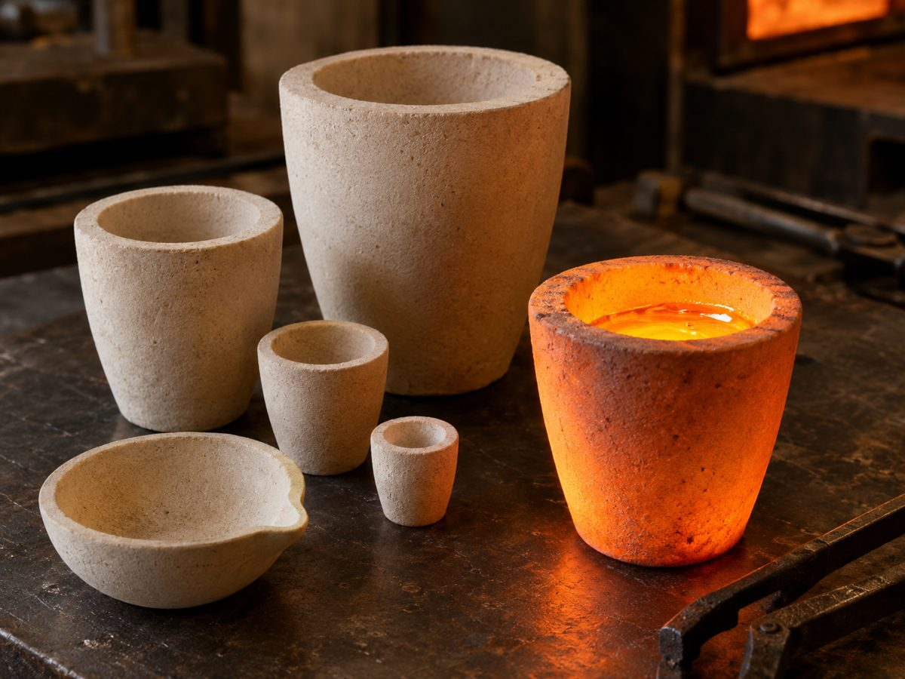

انتخاب اشتباه جنس بوته یعنی ترک خوردن زودهنگام، آلوده شدن فلز یا هدر رفتن انرژی. این راهنما چهار جنس رایج را از نظر کاربرد واقعی مقایسه میکند.
رسی-گرافیتی
ترکیبی از گرافیت و خاک رس نسوز. رایجترین بوته در زرگری و ریختهگری فلزات غیرآهنی است. رسانایی حرارتی خوب و مقاومت بالا در شوک حرارتی دارد. نقطهی ضعفش اکسید شدن گرافیت در هوای آزاد است؛ به همین دلیل معمولاً لعاب محافظ دارد.
مناسب برای: طلا، نقره، مس، برنج، برنز.
سیلیکونکاربایدی
سیلیکون کاربید سخت، بسیار رسانا و مقاوم در برابر سایش است. فلز در این بوته سریعتر ذوب میشود و بوته عمر طولانی دارد. قیمتش بیشتر است، اما برای کار روزانه و پرتکرار بهصرفهتر درمیآید.
مناسب برای: آلومینیوم، مس، برنج، چدن، ذوب در حجم زیاد.
سیلیسی (کوارتز ذوبشده)
شوک حرارتی را بهتر از تقریباً هر جنس دیگری تحمل میکند و برای ذوب با مشعل ایدهآل است. با فلاکسهای قلیایی قوی بهمرور واکنش میدهد.
مناسب برای: طلا، نقره، پلاتین با مشعل، کارهای زرگری.
آلومینایی
آلومینای پرخلوص از نظر شیمیایی تقریباً بیاثر است و تا حدود ۱۷۰۰ درجه کار میکند. حساس به شوک حرارتی است و باید آرام گرم و سرد شود. بیشتر در آزمایشگاهها و برای آلیاژهای دما بالا استفاده میشود.
مناسب برای: آزمایشگاه، فولاد، آلیاژهای خاص، پخت پودر.
جمعبندی
| اگر… | پیشنهاد |
|---|---|
| با مشعل طلا و نقره ذوب میکنید | سیلیسی |
| کورهی زرگری یا القایی دارید | رسی-گرافیتی |
| آلومینیوم یا مس در حجم زیاد ذوب میکنید | سیلیکونکاربایدی |
| کار آزمایشگاهی یا دما بالای ۱۵۰۰ درجه دارید | آلومینایی |